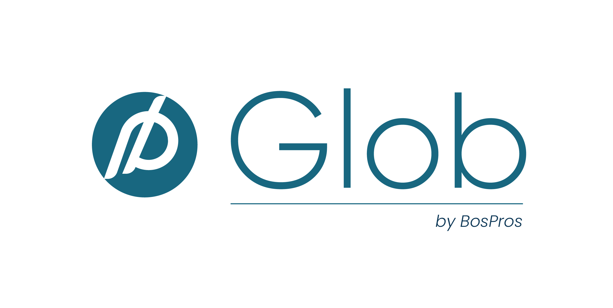
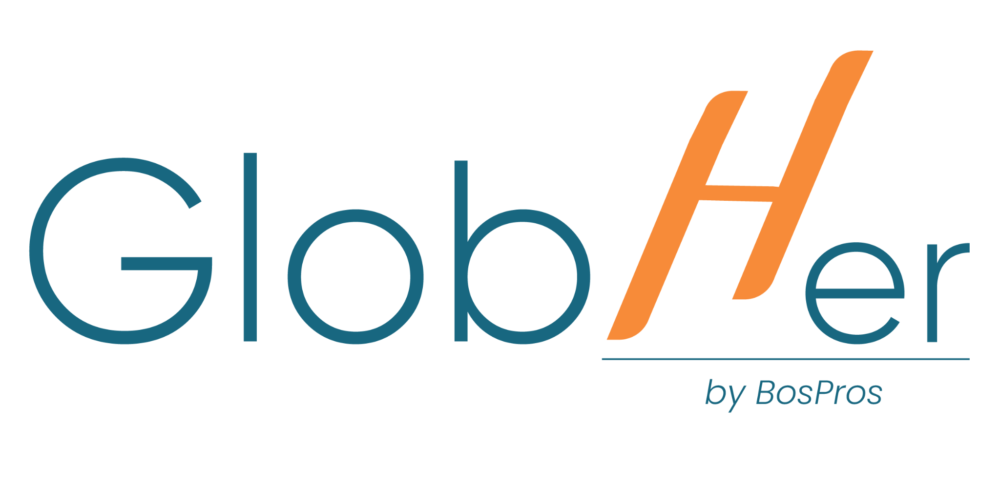
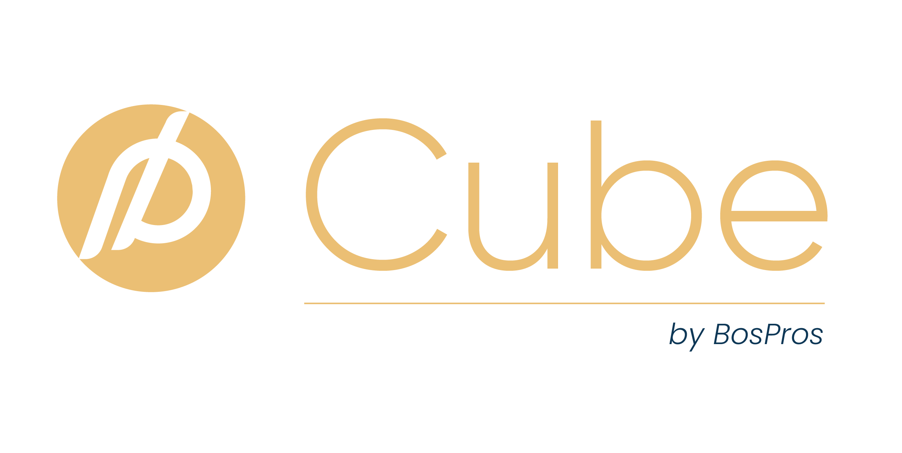
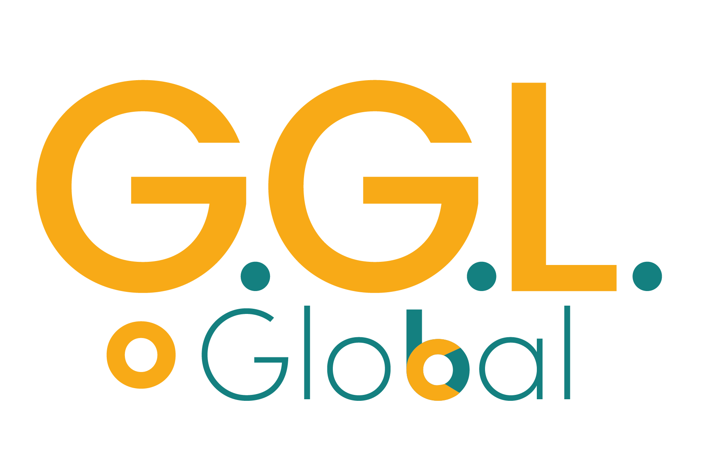
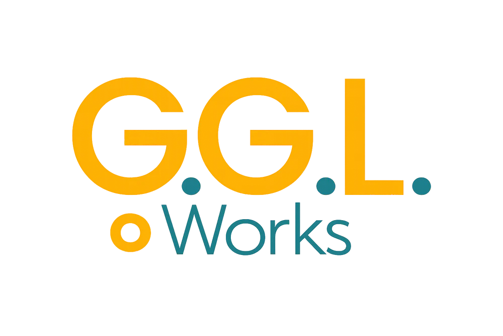

BOSPROS GROUP
BUILD. GROW. SCALE.
BosPros’a Genel Bakış 2021’den bugüne saha deneyimi, küresel ortaklık ağı ve çok katmanlı büyüme ekosistemi
Kısa Tanım
BosPros, Türkiye’de ve dünyada bireyleri ve şirketleri küresel pazarlara açan, büyüten ve ölçeklendiren; strateji, saha operasyonu, teknoloji, yapay zekâ, eğitim ve topluluk bileşenlerini tek çatı altında birleştiren BosPros Grup yapılanmasıdır.
Konumlandırma
Klasik ihracat danışmanlığından farklı olarak BosPros, sadece statik bir rapor değil; eğitim, mentorluk, teknoloji ve aktif saha uygulamaları ile desteklenen uçtan uca bir büyüme sistemi sunar.
BosPros Hikâyesi Klasik ihracat operasyonlarından küresel büyüme ekosistemine dönüşüm
2021
Kuruluş ve ilk saha adımları
50+ Firma
Sahada fiili olarak yönetilen ihracat operasyonları
APAC
Asya Pasifik (7 ülke) bölgesinde güçlü saha varlığı
Avrupa
Avrupa genelinde (7 ülke) partner ve distribütör ağı
GLOB
360° ihracat büyüme sistemi doğdu
GlobHer
Kadın odaklı büyüme + sosyal etki modeli kuruldu
GGL & Pumion
Kreatif ve teknoloji/AI motorlarının entegrasyonu
Club & Intelligence
Uzun vadeli ekosistem ve veri ürünleri katmanı
BosPros’un özü: Masa başı veriyi sahadaki gerçek bilgiyle çapraz doğrulayan; stratejiyi eğitim, altyapı ve uygulama ile tamamlayan bir büyüme yaklaşımıdır.
BosPros Nedir? BosPros bir ihracat danışmanlığı değildir; şirketleri ve bireyleri küresel pazarlara taşıyan bir büyüme ekosistemidir.
BosPros; veriye dayalı hedef pazar seçimi, sahadan doğrulanmış pazar bilgisi, distribütör ve bayi yapılanması, pazarlama ve satış operasyonları, yurtdışı yapılanma, eğitim, yapay zekâ ve teknoloji altyapısını birleştiren küresel büyüme ekosistemidir.
1. Veri
Ticaret verileri, pazar potansiyeli, rakip analizleri ve hedef müşteri havuzu çalışmaları.
2. Saha
Yerel partnerler, distribütörler, bayi ağları ve yerinde ticari doğrulamalar.
3. Strateji
Ülke, kanal, fiyatlama, kurumsal yapılanma ve pazara giriş modeli.
4. Uygulama
Fiziki ziyaretler, distribütör kurulumu, pazarlık süreçleri, satış kapama and denetim.
5. Teknoloji
yapay zekâ temsilcisi entegrasyonu, bulut yazılım ürünleri, web/mobil geliştirme ve dijital altyapı.
6. Topluluk
BosPros Club, küresel ortaklık ağı, mentorlar ve sürekli iş geliştirme ekosistemi.
Bütünsel Sistem: Bu altı sütun birbirinden bağımsız değildir; her biri birbirini besleyen ve sistemin otonom çalışmasını sağlayan entegre bir büyüme döngüsü oluşturur.
Misyon, Vizyon & Ana Pozisyon BosPros’un kurumsal yönü ve büyüme felsefesi
MİSYON
Bireyleri ve şirketleri küresel pazarlara açmak, doğru metodolojilerle büyütmek ve uluslararası ölçekte rekabetçi kılmak.
VİZYON
Veri, teknoloji, saha operasyonları ve topluluk katmanlarını tek çatıda birleştiren, dünyanın önde gelen Küresel Büyüme Ekosistemlerinden biri olmak.
ANA POZİSYON
BosPros altındaki tüm hizmet ve markaları Türkiye ile sınırlı bırakmadan, dünyanın her yerindeki firma ve girişimcilerin kullanabileceği küresel bir platform haline getirmek.
Stratejik İlke: BosPros'un misyonu ve vizyonu, Türkiye'deki üreticileri dünya standartlarında ölçeklendirmekle başlar; otonom teknolojiler ve veri zekası ile küresel bir otonom büyüme ağına dönüşür.
Neden BosPros? Klasik danışmanlıktan farklılaşan değer önerisi
Klasik Danışmanlık
- Sadece internet ve veri tabanlarına dayalı masa başı araştırmalar.
- Rapor teslim edildikten sonra biten, uygulama desteği sunmayan statik süreç.
- Genellikle tek ülke analizi veya tekil bir hizmet odaklı dar yaklaşım.
- Müşteri firmaya yetkinlik aktarmayan, bağımlı kılan yapı.
- Müşteri ile danışmanlık saatleriyle sınırlı, sürdürülebilir olmayan ilişki.
BosPros Büyüme Ekosistemi
- Veri + Saha Doğrulaması: Masa başı verilerin yerel saha ofisleriyle çapraz kontrolü.
- Eğitim + Mentorluk: Akademi aracılığıyla firma içi ekiplerin yetiştirilmesi.
- Teknoloji ve Yapay Zekâ: yapay zekâ temsilcileri ve bulut yazılımları ile süreçlerin otomasyonu.
- CUBE ile Saha Uygulaması: Distribütör bulma ve fiziki satış görüşmeleri.
- Club & Intelligence: Topluluk ve veri havuzu ile sürekli, sürdürülebilir değer.
Değer Farkı: Klasik danışmanlık sürece statik bir raporla müdahil olurken, BosPros veriyi sahadan doğrulayan, teknolojiyi sürece entegre eden ve topluluk gücüyle sürdürülebilirliği garantileyen aktif bir büyüme modelidir.
BosPros Küresel Büyüme Ekosistemi Tüm alt markalar tek bir büyüme makinesi içinde entegre çalışır
Etkileşimli Ekosistem
Markaların detaylarını, hizmetlerini ve ekosistemdeki yerlerini görmek için soldaki daire üzerindeki logolara tıklayın veya dokunun.
Brand Title
Brand description
Ekosistem Gücü: Hiçbir marka izole çalışmaz; veriden stratejiye, kreatif üretimden saha satışına kadar her birim, müşterinin küresel yolculuğunda birbirini besleyen entegre bir değer zinciri sunar.
BosPros Grup Mimarisi BosPros Grup altında konumlandırılmış mevcut iş birimleri ve stratejik büyüme inisiyatifleri
Büyüme Bölümü
- GLOB
- GlobHer
- CUBE
Teknoloji Bölümü
- Pumion
Kreatif Bölüm
- GGL Studio
- GGL Works
Eğitim Bölümü
- BosPros Akademi
Topluluk Bölümü
Stratejik Girişim
- BosPros Kulübü
İstihbarat Bölümü
Stratejik Girişim
- BosPros İstihbaratı
Organizasyonel Yapı: Modüler mimarimiz sayesinde firmalar ihtiyaç duydukları tek bir servisten faydalanabileceği gibi, ihtiyaçları büyüdüğünde tüm grup kapasitesini uçtan uca kullanabilirler.
Büyüme Bölümü BosPros’un pazar stratejisi, iş geliştirme ve saha operasyon kası

GLOB
360° Global Büyüme Sistemi
Veriye dayalı hedef pazar tespiti, rakip ve müşteri analizleri, teşvik/fon yönetimi, ülke giriş planı, kurumsal şirketleşme ve ekibin eğitim süreçlerini içeren kapsamlı yol arkadaşlığı.

GlobHer
Kadın Odaklı Küresel Büyüme
İvme ve Zirve programlarıyla kadın girişimcileri uluslararası pazarlara hazırlayan; ticari büyümeyi toplumsal cinsiyet eşitliği temelli bir sosyal etki modeliyle birleştiren yapı.

CUBE
Saha Uygulama Operasyonu
Stratejiyi fiiliyata dökerek yerinde distribütör/bayi kurulumları, sıcak saha satış ziyaretleri, müşteri görüşmeleri, pazarlık ve operasyon takibini yürüten saha uygulama motoru.
Operasyonel Sinerji: Stratejik hedefleme (GLOB), e-ticaret dönüşümü (GlobHer) ve fiziki saha satışı (CUBE) tek bir otonom büyüme koridoru oluşturacak şekilde senkronize çalışır.
GLOB 360° Global Growth System Sadece statik bir rapor değil; 6–12 aylık aktif büyüme yol arkadaşlığı
Analiz
Firma, ürün, finans, pazar analizi
Doğrulama
Masa başı verinin saha partnerleriyle kontrolü
Strateji
Hedef ülke, kanal, fiyat ve yapı kurgusu
Eğitim
Ekip eğitimi ve yapay zekâ adaptasyonu
Uygulama
Müşteri, distribütör ve saha bağlantıları
Ölçekleme
Sonuç ölçümü, tekrar ve sürdürülebilirlik
Büyüme Döngüsü: GLOB 360, tek seferlik bir hizmet değil; analizden ölçeklemeye uzanan, firmanın tüm ihracat kabiliyetlerini dönüştüren sürekli bir başarı döngüsüdür.
GLOB’un Detaylı Hizmet Katmanları Her başlık bağımsız ürünleşebilir; birlikte 360° kurumsal dönüşüm sistemi oluşturur
Modülerlik: İhtiyaç duyduğunuz her katman tekil bir çözüm sunarken, birleştiklerinde firmanızı ihracat dünyasında tam donanımlı bir oyuncuya dönüştürür.
GlobHer Kadın odaklı global büyüme programı: Ticari büyüme + Sosyal etki
Mikro girişimci ve bireysel kadın markaları globale taşımayı hedefler.
- ABD şirket kurulumu ve banka hesabı
- Etsy, Amazon ve Ozon mağaza kurulumu
- Bilingual (çift dilli) e-ticaret sitesi
- 30 günlük stratejik pazarlama planı
- Haftalık birebir gelişim danışmanlığı
Orta ve büyük ölçekli kadın ortaklı firmaları uluslararası pazarla buluşturur.
- Veriye dayalı küresel pazar analizi
- En doğru 3 hedef ülke tespiti ve analizi
- Filtrelenmiş potansiyel müşteri listeleri
- Fiyatlama ve kanal rekabet analizleri
- Mevcut finansal yapının ihracata uygunluğu
Fırsat eşitliği sağlayarak kadınların ekonomik bağımsızlığını destekler.
- İhtiyaç sahibi ev hanımları ve genç kızlar
- BosPros Academy'den ücretsiz eğitim alırlar
- Başarılı olanlar sosyal etki kontenjanına alınır
- E-ticaret ile sıfırdan küresel gelir elde ederler
1 Satılan GlobHer Paketi
= 1 Ücretsiz Sosyal Kontenjan
Sosyal Vizyon: GlobHer, ticari karlılığı sosyal sorumlulukla birleştirerek, kadın girişimcilerin küresel başarılarının çarpan etkisiyle daha fazla kadına istihdam ve gelir kapısı açmasını hedefler.
CUBE: Saha Uygulama Operasyonu GLOB raporlarından çıkan pazar hedeflerinin sahadaki uygulama gücü
CUBE, firmalar ihracat operasyonlarını tamamen dışarıya devretmek istediğinde devreye giren operasyon markasıdır. Distribütör/bayi kurulumu, saha ziyaretleri, müşteri görüşmeleri, pazarlık, satışa hazırlık ve operasyon takibi CUBE altında yürütülür.
Hedef ülkedeki distribütör ve bayi alternatiflerinin haritalandırılması.
Potansiyel adayların ön incelemesi, iletişime geçilmesi ve görüşmeler.
Ülkeye özel giriş ve pazarlama kanalı stratejisinin kurulması.
Sıcak müşteri ziyaretleri, teklif hazırlığı, pazarlık ve satış kapama.
Servis ağları kurulumu (teknik ürünlerde) veya memnuniyet takibi.
Yerel partner ve bayilerle birlikte saha uygulamasının denetimi.
Saha Gücü: CUBE, masa başı raporları canlı birer satış kanalına dönüştürerek, firmaların yurt dışında yerel kadrolar kurmasına gerek kalmadan ihracatı otonom bir operasyon haline getirir.
Teknoloji Bölümü: Pumion BosPros’un teknoloji, yapay zekâ ve bulut yazılım motoru
Pumion, BosPros ekosisteminin geleneksel yazılım ve yapay zekâ tabanlı yazılım hizmetleri veren teknoloji markasıdır. Bulut yazılım ürünleri, otonom yapay zekâ temsilcileri, özel yazılımlar ve dijital dönüşüm araçları Pumion altında geliştirilir.
Bulut Yazılım Ürünleri
Ekosisteme dahil firmaların veya bağımsız kullanıcıların kullanabileceği ölçeklenebilir bulut yazılımları.
Yapay Zekâ Temsilcisi Sistemleri
Operasyon süreçlerini hızlandıran, veri işleyen, otonom kararlar alabilen yapay zekâ iş akışları.
Özel Yazılım
İhracat pazarlama altyapıları, CRM sistemleri, entegrasyonlar, web ve mobil uygulamalar.
AI Dönüşüm
Klasik şirket operasyonlarının yapay zekâ araçlarıyla donatılarak verimlilik artışı sağlanması.
Teknolojik Kaldıraç: Pumion, insan gücüne bağımlı operasyonel süreçleri otonom yazılımlara dönüştürerek globalleşme yolundaki firmaların ölçeklenebilirlik bariyerini ortadan kaldırır.
Kreatif Bölüm (GGL) GGL Studio ve GGL Works, BosPros’un kreatif üretim ve dijital pazarlama katmanını oluşturur

GGL Studio
- Web sitesi, e-ticaret altyapısı, mobil uygulama ve oyun arayüzü tasarımları.
- Kurumsal kimlik, marka konumlandırma, logo ve marka kimliği rehberi çalışmaları.
- Temel dijital pazarlama kurgusu ve ihracata uyumlu reklam altyapısı.
- Yapay zekâ destekli kreatif süreçler ve hızlı görsel prototipleme.

GGL Works
Hizmet Olarak Kreatif Tasarım
- Abonelik bazlı, hızlı ve ölçeklenebilir görsel tasarım platformu.
- Marka bilgilerinin (logo, renk paleti, marka kimliği rehberi) bir kez sisteme yüklenmesi.
- Form üzerinden kolay, hızlı talep oluşturma ve atama.
- 24 saat içinde yüksek kaliteli görsel teslim garantisi.
Kreatif İvme: GGL, kurumsal kimlik inşasını ajans kalitesinde (GGL Studio) yürütürken; günlük tasarım operasyonlarını 24 saatte hızlı teslim sunan otonom talep sistemiyle (GGL Works) ölçeklendirir.
GGL Works: Hizmet Olarak Kreatif Tasarım Ajans kalitesini yapay zekâ hızı ve abonelik ekonomisiyle birleştiren platform
Üye Olunur
Kurumsal veya bireysel kullanıcı aboneliğini başlatır.
Marka Bilgileri Yüklenir
Markanın logoları, renk kodları, fontları ve stil rehberi sisteme girilir.
Talep İletilir
Portal üzerindeki form ile talep edilen görsel ihtiyacı detaylandırılır.
Üretim Süreci
Yapay zekâ araçlarıyla hızlandırılmış profesyonel tasarım ekibi çalışır.
24 Saatte Teslim
Hazırlanan sosyal medya, reklam, katalog veya web görselleri teslim edilir.
Küresel Ölçeklenebilirlik
GGL Works’ün nihai hedefi, tasarım üretimini insan saatinden bağımsızlaştırarak, Türkiye dışındaki tüm global firmalara ve ajanslara aylık abonelik modeliyle hizmet satan küresel bir tasarım fabrikası olmaktır.
BosPros Akademi GLOB, GlobHer ve tüm ekosistemin eğitim ve yetkinlik kurma motoru
BosPros Akademi, GLOB ve GlobHer içindeki tüm eğitimlerin ana taşıyıcısıdır. Temel vizyonumuz; firmalara sadece rapor teslim etmek değil, raporun nasıl uygulanacağını, yönetileceğini ve başarının nasıl sürdürülebilir kılınacağını bizzat öğretmektir.
İhracat Akademisi
Temel ihracat stratejileri, hedef pazar seçimi metodolojileri, gümrük süreçleri, operasyon ve uluslararası satış kapama eğitimleri.
Yapay Zekâ Akademisi
Şirket içi operasyonlarda yapay zekâ kullanımı, veri analizi, otomasyon araçları, prompt mühendisliği ve içerik üretim süreçleri.
Dijital Büyüme
E-ihracat, global pazar yerleri (Amazon, Etsy vb.) yönetimi, çift dilli e-ticaret siteleri yönetimi ve küresel reklamcılık.
Kurumsal Akademi
Büyük ölçekli firmalara özel hazırlanan kurumsal eğitimler, departman yetkinlik dönüşüm programları ve sertifikasyon süreçleri.
BosPros Kulübü: Ekosistem Omurgası Stratejik Girişim: Müşteri, partner ve distribütörleri tek ağda birleştiren sinir sistemi
BosPros Kulübü basit bir “müşteri kulübü” değildir; GLOB müşterileri, GlobHer üyeleri, global partnerler, mentorlar, yatırımcılar, distribütörler, eğitmenler ve hizmet sağlayıcıları tek bir ağ altında buluşturan bir iş geliştirme ve sinerji omurgasıdır.
Hedef: Proje teslim edilip bittikten sonra da müşteri ilişkisini sürdüren, ekosistem içi çapraz satış ve yeni küresel ortaklık fırsatları doğuran bir topluluk katmanı yaratmak.
BosPros İstihbaratı: Veri Sermayesi Stratejik Girişim: Yıllar boyunca sahada derlenen ticari bilginin veri ürününe dönüşmesi
BosPros İstihbaratı, her GLOB raporu, CUBE saha operasyonu ve partner etkileşimi sırasında elde edilen pazar, rakip, distribütör, tedarikçi, müşteri, fiyat ve saha verilerinin konsolide edilerek karar destek sistemlerine ve dijital veri ürünlerine dönüşmesidir.
Veri Kaynakları
- GLOB Raporları
- CUBE Operasyonları
- Pumion Yapay Zekâ ve Bulut Yazılımları
- Kulüp Etkileşimleri
- Ortaklık Ağları
BosPros İstihbaratı Havuzu
Konsolide Ediliyor & Yapılandırılıyor
Zekâ Ürünleri
Global Partner Ağı Masa başı ticaret verileri, yerel saha partnerleriyle çapraz doğrulanır
Fiziki Saha Gücü
BosPros’u klasik danışmanlıklardan ayıran en büyük güç; sadece gümrük verileri veya internet araştırmalarıyla kalmayıp, yerel partnerleri vasıtasıyla sahadaki gerçek bayi, fiyat ve rekabet bilgilerini yerinde doğrulamasıdır.
Müşteri Yolculuğu BosPros müşterileri tek bir hizmetten değil, tüm ekosistemden değer alır
Strateji & Pazar
Eğitim & Yetkinlik
Dijital Altyapı
Yazılım & Yapay Zekâ
Saha Uygulama
Süreklilik & Ağ
Sinerjik Müşteri Yolculuğu
Müşterinin BosPros ekosisteminde attığı adımların, hizmetlerin birbirini nasıl beslediğinin detaylarını görmek için yukarıdaki boru hattındaki adımlara tıklayın.
Step Title
Step description text
BosPros Büyüme Volanı Ekosistem büyüdükçe veri, ürün ve topluluk değeri katlanarak artar
Volan Etkisi
Her yeni GLOB müşterisi ekosisteme girdiğinde Akademi ile eğitilir, GGL & Pumion ile altyapısı kurulur, CUBE ile sahada satışı gerçekleştirilir. Müşteri daha sonra Kulüp'e katılarak topluluğu büyütür. Bu döngüde oluşan tüm saha ve müşteri verileri İstihbarat havuzuna akar. Biriken veri ise bir sonraki pazar stratejisinin çok daha isabetli, hızlı ve akıllı kurulmasını sağlar.
Globalleşme Hedefi BosPros altındaki tüm markaların nihai hedefi küresel pazara açılmaktır
İhracat Danışmanlığı Sadece Türkiye'ye Lazım Değildir
Polonya'daki bir makine üreticisi, Vietnam'daki bir tekstil firması veya ABD'deki bir yazılım şirketi de küresel pazarlara açılmaya, saha doğrulaması yapmaya ve distribütör ağları kurmaya ihtiyaç duyar. BosPros, Türkiye'de geliştirdiği saha metodolojilerini tüm dünyaya ihraç edecek şekilde konumlandırılmıştır.
Dünya genelindeki tüm şirket ve kadın girişimcilere büyüme ve pazar açılım modelleri sunar.
Yazılım, yapay zekâ temsilcisi kurulumları ve abonelik bazlı görsel tasarım hizmetlerini küresel ölçekte ihraç eder.
Küresel bilgi birikimini akredite eğitimlere, aktif ticaret veri ürünlerine ve uluslararası ağlara dönüştürür.
Küreselleşme Vizyonu: BosPros'un metodolojileri sınır tanımaz. Amaç, Türkiye'de edinilen yerel bilgi birikimi ve operasyonel disiplin ile küresel pazarlarda büyüme modelini dünya standartlarına taşımaktır.
BosPros 2030 Vizyonu Klasik bir danışmanlık şirketinden küresel bir veri, teknoloji ve büyüme ekosistemine
Büyüme
GLOB, GlobHer ve CUBE ile dünya genelinde binlerce firmaya hizmet sunan lider büyüme operasyon ağı.
Teknoloji
Pumion aracılığıyla tekrarlanabilir bulut yazılım gelirleri ve şirketlere entegre otonom yapay zekâ temsilcisi ağları.
Kreatif
GGL Works ile binlerce global ajans ve kurumsal aboneye 24 saatte tasarım teslim eden küresel kreatif fabrikası.
Eğitim
BosPros Akademi ile küresel çapta akredite e-ihracat, yapay zekâ ve uluslararası ticaret sertifikasyon merkezi.
Topluluk
BosPros Kulübü ile binlerce firmanın, distribütörün ve yatırımcının buluştuğu en aktif global iş ağı.
İstihbarat
Veri ürünleri, gümrük zekası ve saha veritabanı ile ihracat kararlarına yön veren küresel veri/teknoloji şirketi.
Stratejik Hedef: 2030 yılına kadar BosPros, iş süreçlerini ve büyümeyi dijitalleştirerek, geleneksel danışmanlık sınırlarını tamamen aşan küresel bir büyüme ekosistemi haline gelecektir.
BosPros Uzun Vadeli Değeri Nasıl Üretir? Değer; tekil bir hizmetten değil, markalar arası döngüden ve sinerjiden doğar
1. Bilgi Birikimi
5 yılı aşkın saha tecrübesi, 50'den fazla firmanın bizzat yönetilmiş ihracat operasyonları, farklı endüstrilerde biriktirilmiş pazar giriş pratikleri ve kurulan bayi ağları.
2. Veri Havuzu
Her rapor ve CUBE operasyonunda biriken pazar eğilimleri, rakip fiyatlamaları, doğrulanmış alıcı listeleri ve distribütör memnuniyet verilerinin oluşturduğu veri sermayesi.
3. Teknoloji & Ölçeklenebilirlik
Saha bilgisini bulut yazılım ürünlerine ve otonom yapay zekâ temsilcisi iş akışlarına aktararak, insan gücü artışına ihtiyaç duymadan küresel ölçekte büyüme yeteneği.
Sürdürülebilirlik: BosPros'un ürettiği uzun vadeli değer, firmaların küresel pazarda otonom bir şekilde kalıcı olmasını ve pazar dinamiklerine göre kendilerini güncelleyebilmesini sağlar.
BOSPROS GROUP
BUILD. GROW. SCALE.
www.bospros.com
info@bospros.com